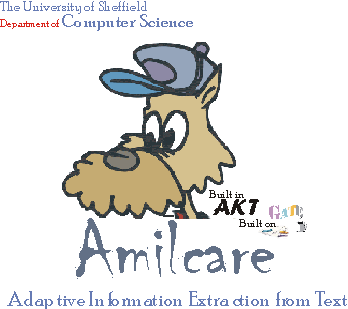

You entered this page because you accepted the conditions for downloading Amilcare. If you have accessed this page by chance, please leave now.
Be sure to read the condition of use before downloading. |
Thanks for choosing to DOWNLOAD Amilcare.
Amilcare is released for Java 1.4.
***please note!***: for a mistake the default for "Minimum Matches" -> "All Rules" is set to 3. Instead, 1 is a much more reasonable value, especially when working on small corpora. (Go to "Show Advanced" - "Minimum Matches" - "All Rules" and set it to 1, then save the scenario. This should be done everytime you create a new scenario")
History:
__________
Let me know if you have any problems
Fabio Ciravegna (F.Ciravegna@dcs.shef.ac.uk)
Department of Computer Science, University of Sheffield
Tel:+44(0)114-22.21940 Fax:+44 (0)114-22.21810
Regent Court, 211 Portobello Street
Sheffield S1 4DP UNITED KINGDOM
http://www.dcs.shef.ac.uk/~fabio/